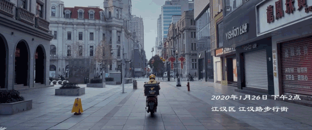
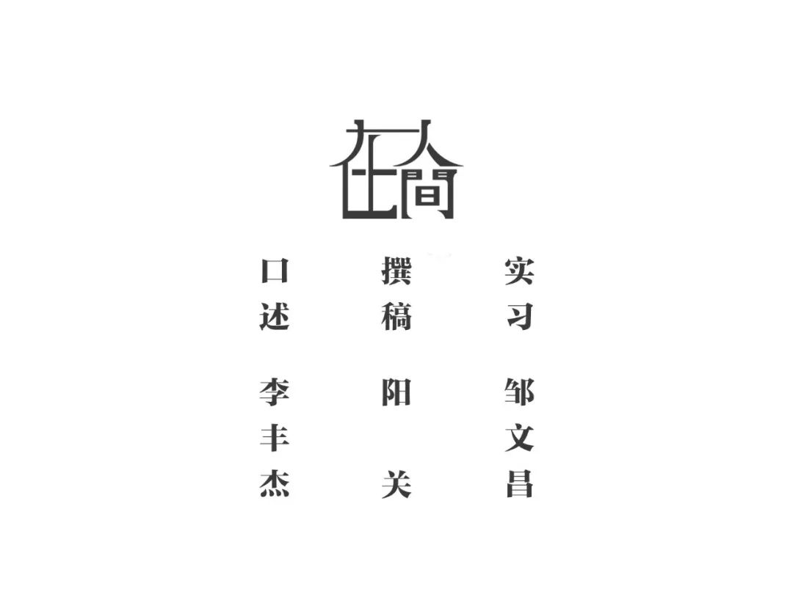

武汉外卖员穿过人间烟火
原文链接 备份链接 摘要：新型冠状病毒肺炎袭城之后，外卖员老计（化名）觉得武汉的马路变宽了，武汉人的面目也温柔下来。大年初一，他给武昌医院的医生送了一餐鲍鱼饭。才华街友谊大道路口的药店口罩卖完了，消毒液还有少量存货，他秒发微博，广而告之。 …


一
我叫李丰杰，我在武汉送外卖。
我本来想过年留在武汉值班跑单，但是腊月二十九那天早上一出门，我妈就一直给我打电话，每隔十分钟或者半个小时就打一次，强烈要求我回家，说武汉出现了新型冠状病毒，再不回来就回不来了。搞得我没办法工作，他们电话一打进来，客人就找不到我了。
在这之前，我也看到很多新闻和浏览器推送新型冠状病毒的信息。去年12月底时，病毒还没有扩散开来，我看到有些骑手戴口罩。我问他们，戴口罩干嘛。他们就说，武汉好像有病毒肺炎。
作为外卖小哥，这是很需要注意的。我们送餐就是要对顾客负责，对商家负责，对外卖负责。我是骑士长，我们小组里有二十几个人。我开始要求每个人都必须佩戴口罩。
情况渐渐不好起来。人们只要上街，就都戴着口罩，把自己裹得严严实实的。经过一些药店，看到好多人堵在药店门口，买口罩，买防护装备。距离除夕一个星期时，有一次我去一个常进的小区送餐，突然不能进了，我问什么情况，保安就说是因为病毒。
后来领导告诉我们这些基层骑手，到哪里可以领口罩。一些跑单的人也觉得病毒很严重，就提前回家了。又临近春节，我们组从1月12日起陆续有人回家，到1月19日时，已经走掉一大半了。
我作为骑士长，不可能跟着一起回去。现在我们组还剩下7个人。他们几个本来就是住在武汉，在武汉买了房，就在这边过年。
我不知道这种病毒到底是什么性质，心想，可能和2003年的非典差不多。我是1996年生的，其实对非典的印象也不深。
但腊月二十九这天，我爸妈坚持打电话要我回去，我就想着回去安抚一下他们。打算回去过完年三十，初一就赶回武汉上班。
那时，武汉到孝感的长途客运车已经停运了。我表哥刚好也要从武汉回去，我妈就打电话给我表哥，让他顺便载我。下午三点多，我跟着表哥一起回去了。下高速时，设卡的工作人员给我们量了体温。
二
没想到，我回去的当天晚上，武汉的高速路口被封，国道也被封。所有长途客运班车都停运。没有通行工具。我以往都是坐一个半小时长途客车往返武汉和孝感。
我跟爸妈说，不行啊，我得想办法回武汉。我觉得自己必须回武汉，我的队员还在武汉上班，作为骑士长，我觉得我应该跟他们一起在武汉抵御疫情，为那些分散在医院的医生护士送上热餐，尽绵薄之力。

我在手机上看了很多新闻，各个地方的人都来支援武汉。我觉得这跟我也有关系，我队里面的人还在武汉，还在坚持，我应该跟他们一起为需要的人送上一份热餐。
但是我爸妈不同意。当时孝感也有疫情，他们心里有点慌。我在家里跟他们做思想工作。他们没有真正了解过武汉的病毒，就只是听说这个病毒很厉害。我每天都反复跟他们说，不用担心，该来的会来，不该来的不会来，如果病毒要找我，我怎么躲都没用，我去武汉不会有事的。
父母问我，没车你怎么回去，我说那我就走回去。他们也拗不过我。
我是铁了心。
正月初一早上七点，吃完早餐，我就从家里步行出发了。天还蒙蒙的，走着走着，慢慢亮起来。为了减轻负重，我只带了手机和一瓶水。我家到武汉有五十公里，我当时预计最多走十个小时，天黑之前赶到武汉。
从家里出来，我就上了国道，国道两边都是稻田，也没有什么农作物，空空的，可以看到一些村庄的房子。
虽然很萧条，但是我很开心。老爸老妈终于不拦我了，上路的时候不说你不要回去了。他们就说自己注意安全。
我很兴奋。走的不算快。长途步行千万不要跑，会浪费精力，而且跑不了多远，还会很疲惫，就是匀速地走就完了。
我以前在部队里当兵，每个月都有拉练，就是徒步，那时体力好，走50公里是很简单的事。现在已经五年没有怎么锻炼，完全是靠自己的毅力坚持。
我一直走，一直走，没有歇过，也不看手机。在国道上有一段路看不到人，我就想，走了这么久，这段路怎么一个人都没有，周围也看不到村庄和房子。两只腿已经麻木了，不知道停下来休息。我就觉得一直往前走就对了。
国道上基本看不到车。偶尔遇到几个人在路上晃悠，我们都戴着口罩，因为疫情，彼此能避开就避开。国道两边村与村之间的路都拿土堆隔断了，桥也被土堆隔断了，我就从土堆上爬过去。
差不多在国道走了几个小时，我就开始走小路，在田间穿梭。因为小路比较近，可以节省时间。但这里没法用导航，导航只会把我导到大路上。我以前坐车来来回回经过很多次，也有点印象。之前表哥给我指过一个方向，我就朝着那儿走了。
我就朝着那个方向一直走，哪里能走就走哪里。这里的路，你看着好像就在对面，但是中间却隔着一条大水沟，还要绕路。
三
这一路上，我想了很多。先是担心封路，等我走到那边，会不会设卡，不让我回武汉。但又想我的兄弟还在武汉，我要尽快回去。很累的时候，我给自己鼓劲，想我已经到这个地方了，就算要拦着我，我也要回武汉。
最期待的是路上能拦到一辆顺风车。但我从家里出发一直走到武汉边上都没碰到。我不停给自己说，一定会有顺风车，就快有啦！如果不这样想，长长的一条路，一眼望不到头，人就会很失望。
下午三点半多，我已经走得很累了，天气也开始阴冷。这时来了两辆私家车，我试图拦下来问能不能载我。但人家根本就不停，也没理我。我能理解他们，于是又继续走。
走了一整天，我连午饭也没吃。是完全忘记了要吃午饭，也感觉不到饿。到了下午，我满脑子想的都是，我马上要到武汉了。全身的细胞都兴奋起来了。我给自己说，天黑之前，一定要到武汉。不然天黑就麻烦了，找不到方向。
直到最后，我看到一条水泥路，心里想，哇，走过前面这段路，我就到武汉了，不远了。
武汉边上有一条河，河上有一座桥，桥也被堵住了。我远远看到国道上有几个穿着防护服的人站在桥头，还有警察。心想肯定过不去。于是我又沿着河找其他路进去，大概走了一两个小时才找到小路。
小路上的桥也被堵住了，设了卡。那边堆着土堆，旁边还有一架很大的推土机。一个年纪比较大的大叔在那守着，他坐在板凳上，戴着口罩。
有两个人站在那也要去武汉，跟我说，不让过。我当时心里一紧，完蛋了，估计又要找地方绕路了。但我已经走到这里了，桥对面就是武汉，不可能又原路返回。
于是我抱着侥幸的心理走过去。他问我从哪里来的，我只说我从武汉的边上来。
大叔的老婆这时来送饭。她对她老伴说，就让他过去吧。大叔站在土堆旁说，你先过来一下，把体温量一下。量了体温，登记了身份证，他告诉我们，到了武汉就不能出来了。
被放行后，我很亢奋。那时天还没黑，差不多是下午四点多。进了武汉，我继续慢慢走，边走边看留意路上有没有车，能带我一程。
走了大概半个小时，到了东西湖区附近，有好几辆车停在路边，我问他们到不到武昌。他们说到，但不知道哪里设卡了。一个司机就说，尽可能把你往那边送，遇到设卡，我停下来，你就下车。我们运气挺不错，走长江二桥到武昌火车站，一路上畅通无比。之后我再联系人来火车站接我，当时武汉区与区之间都设了卡。
我住在洪山区南湖这边。大年初一这一天，我花了十几个小时到家，到家时已经是下午六点半。我赶紧收拾了屋子，给自己煮了一碗面条。
四
回到武汉，我发现它跟我离开之前已经是两样了。现在道路空荡荡的，基本上看不到几个人。公交、地铁都停了。我感触很大，心情沉重。一个繁华的城市被新型冠状病毒搞得乌烟瘴气，很多人都不敢出门，窝在家里。

送餐也没有之前那么好送了。商家少，点外卖的人也少，大部分人已经在家里买了足够的粮食。
但回到武汉第三天，我就开始接单，出门就往有单的商家附近等。每天的单很少，我就骑着车在空旷的大马路上晃悠，等单。正月初三一天，我跑了差不多二十几单。
大部分的单都是去小区。有的小区让进，有的小区不让进。小区害怕送餐骑手有感冒症状，我们也怕送餐时遇到感冒的顾客。
我的小队现在有七个人还在送单，我年纪最小，最大的有40岁。大多人看到医院的单会有点怵。他们会问我，这个怎么搞，要不要送。我说可以送啊，不进去就行，站在门口让他们来拿。他们就打电话跟医生沟通送到医院门口。
我最近去医院送过三次单。医院一般都是下午点外卖。有一次是给武汉一家精神病医院送餐，到了门口发现有防护栏，不让人进去，我就给医生打电话，他们说自己来拿。医院住了很多病人，又是敏感期，我们在外面等，这对我们也有保障。
我有一个同行，他之前送完餐经过医院，看到有好心人拉着一车餐送去医院。我听了觉得很感动。我知道美团现在也正给一些医院的医护人员免费送餐，觉得挺自豪的。
其实每次去医院心情都不会很好。还有一次我在小区送餐，看到小区里有人被救护车带走了，内心多多少少也有些紧张。
但我回到武汉了，肯定要继续工作，该送单送单。

我做外卖三年了，当时感觉这一行挣钱比较快，收入不错。开始什么都不懂，像个小白。外卖行业是个服务行业，我知道有人看不起我们，但三百六十行，行行出状元。
一般来说，我是骑士长，要经常和队员们见见面。这次回来十天一共只见了三次。现在是特殊时期，我们找了一块人少的空地见面。我提醒他们一定要戴口罩，做好防护。如果有谁觉得不舒服了，要打电话给我。
我们出门的时候，会把口罩戴好，不去人多的地方。去餐厅领东西，我们就站在门口，跟老板说我是美团多少号，老板把餐放到外面桌子上的保温箱里，我们来时直接去拿。
为了保证安全，我们送餐的时候是无接触配送。餐快到时，我就打电话给顾客，跟顾客说放门口了，让他们来拿。特殊时候，大家都能互相理解。
现在我基本每天早上十点出门，晚上十点回家。我平时不太看微信，用得少，我把家庭群屏蔽了，晚上回家偶尔才看一下。
我怀念那个大街上人来人往，车水马龙的武汉。



新型肺炎疫情牵动人心，
《在人间》现面向全国网友征稿：
(一) 疫区影像日记
如果你身处疫区
请你用照片（视频）和文字记录
你所听闻和见到的一切
照片不少于3张
文字不少于300字
投稿方式：微信联系人间君（zairenjianliving）
（二）抗击疫情真实故事
无论你是一线医护人员、志愿者、
确诊或疑似患者及家属、已治愈出院人士等等，
如果希望讲述疫情相关经历，
请微信联系人间君（zairenjianliving）

原文链接 备份链接 摘要：新型冠状病毒肺炎袭城之后，外卖员老计（化名）觉得武汉的马路变宽了，武汉人的面目也温柔下来。大年初一，他给武昌医院的医生送了一餐鲍鱼饭。才华街友谊大道路口的药店口罩卖完了，消毒液还有少量存货，他秒发微博，广而告之。 …
原文链接 备份链接 大家好，我是田静。 疫情爆发最严重的那几天，我家的亲戚被隔离了。 听到消息后家里人都吓得不轻。原来是亲戚小龙春节前去过武汉一晚，回来后就发烧、胸闷、呼吸困难，在老家农村，只能监管，不能诊治。 每天在家隔离，实时向当地村 …
原文链接 备份链接 突发的疫情搅乱了这个春节。武汉封城后，居民被迫留在家中、医护人员无法离开工作岗位，吃饭成了问题。与此同时，餐饮、休闲、商超便利等生活服务业也面临巨大考验。 作为居民和商家的连接点，一群隶属于本地生活服务平台的留守外卖 …
原文链接 备份链接 1月23日凌晨，武汉宣布自10时起，全市的航空、铁路、城市公交、地铁、轮渡、长途客运暂停运营，无特殊原因，市民不要离开武汉。新型冠状病毒肺炎，正考验着这座九省通衢的特大城市。 此后24小时，真实故事计划访问了几位选择留 …
原文链接 备份链接 图源B站UP主林晨同学自制视频 九位在武汉度过了除夕夜的普通人，他们从事着不同的职业，拥有不同的人生经历，但都在这座城市度过了可能是人生中最难忘的一个除夕。他们讲述的，不只是一个简单的夜晚，而是一场大疫之下，一个个普通 …